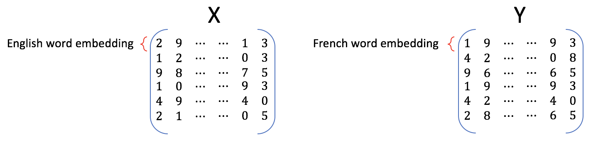
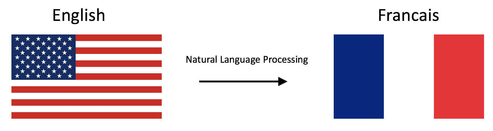
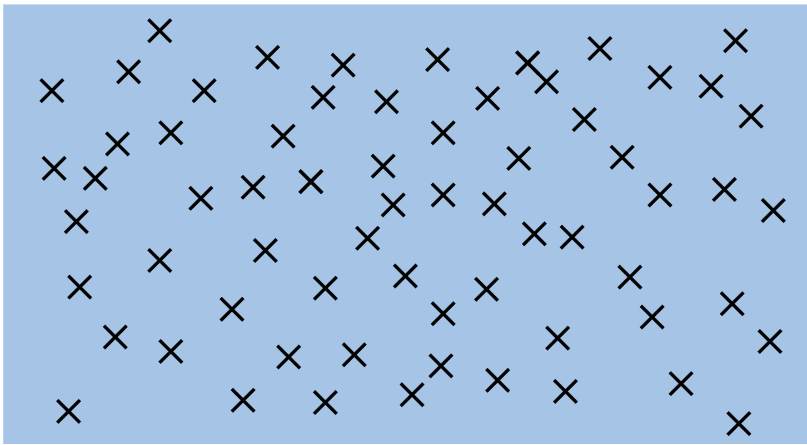
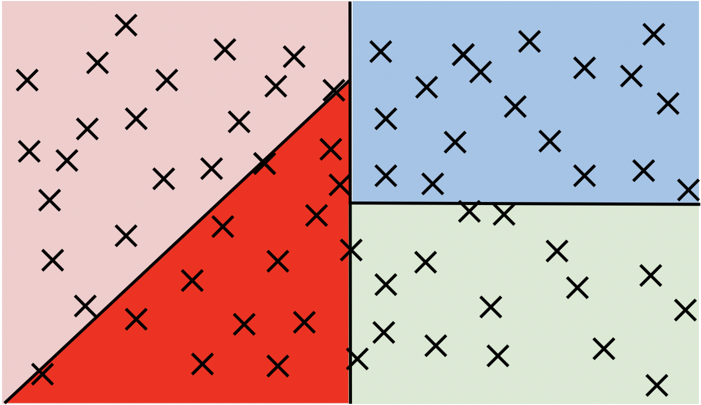
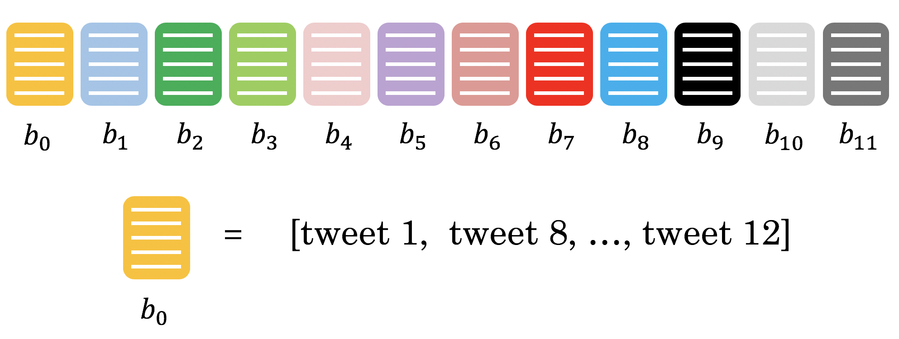

Assignment 4 - Naive Machine Translation and LSH#
You will now implement your first machine translation system and then you will see how locality sensitive hashing works. Let’s get started by importing the required functions!
If you are running this notebook in your local computer, don’t forget to download the twitter samples and stopwords from nltk.
nltk.download('stopwords')
nltk.download('twitter_samples')
Important Note on Submission to the AutoGrader#
Before submitting your assignment to the AutoGrader, please make sure you are not doing the following:
You have not added any extra
printstatement(s) in the assignment.You have not added any extra code cell(s) in the assignment.
You have not changed any of the function parameters.
You are not using any global variables inside your graded exercises. Unless specifically instructed to do so, please refrain from it and use the local variables instead.
You are not changing the assignment code where it is not required, like creating extra variables.
If you do any of the following, you will get something like, Grader Error: Grader feedback not found (or similarly unexpected) error upon submitting your assignment. Before asking for help/debugging the errors in your assignment, check for these first. If this is the case, and you don’t remember the changes you have made, you can get a fresh copy of the assignment by following these instructions.
Table of Contents#
import pdb
import pickle
import string
import time
import nltk
import numpy as np
from nltk.corpus import stopwords, twitter_samples
from utils import (cosine_similarity, get_dict,
process_tweet)
from os import getcwd
import w4_unittest
-------------------------------------------------------------------------
ModuleNotFoundError Traceback (most recent call last)
Cell In[1], line 7
3 import string
5 import time
----> 7 import nltk
8 import numpy as np
9 from nltk.corpus import stopwords, twitter_samples
ModuleNotFoundError: No module named 'nltk'
# add folder, tmp2, from our local workspace containing pre-downloaded corpora files to nltk's data path
filePath = f"{getcwd()}/tmp2/"
nltk.data.path.append(filePath)
1. The Word Embeddings Data for English and French Words#
Write a program that translates English to French.
The Data#
The full dataset for English embeddings is about 3.64 gigabytes, and the French embeddings are about 629 megabytes. To prevent the Coursera workspace from crashing, we’ve extracted a subset of the embeddings for the words that you’ll use in this assignment.
The subset of data#
To do the assignment on the Coursera workspace, we’ll use the subset of word embeddings.
en_embeddings_subset = pickle.load(open("./data/en_embeddings.p", "rb"))
fr_embeddings_subset = pickle.load(open("./data/fr_embeddings.p", "rb"))
Look at the data#
en_embeddings_subset: the key is an English word, and the value is a 300 dimensional array, which is the embedding for that word.
'the': array([ 0.08007812, 0.10498047, 0.04980469, 0.0534668 , -0.06738281, ....
fr_embeddings_subset: the key is a French word, and the value is a 300 dimensional array, which is the embedding for that word.
'la': array([-6.18250e-03, -9.43867e-04, -8.82648e-03, 3.24623e-02,...
Load two dictionaries mapping the English to French words#
A training dictionary
and a testing dictionary.
# loading the english to french dictionaries
en_fr_train = get_dict('./data/en-fr.train.txt')
print('The length of the English to French training dictionary is', len(en_fr_train))
en_fr_test = get_dict('./data/en-fr.test.txt')
print('The length of the English to French test dictionary is', len(en_fr_test))
Looking at the English French dictionary#
en_fr_trainis a dictionary where the key is the English word and the value is the French translation of that English word.
{'the': 'la',
'and': 'et',
'was': 'était',
'for': 'pour',
en_fr_testis similar toen_fr_train, but is a test set. We won’t look at it until we get to testing.
1.1 Generate Embedding and Transform Matrices#
Exercise 1 - get_matrices#
Translating English dictionary to French by using embeddings.
You will now implement a function get_matrices, which takes the loaded data
and returns matrices X and Y.
Inputs:
en_fr: English to French dictionaryen_embeddings: English to embeddings dictionaryfr_embeddings: French to embeddings dictionary
Returns:
Matrix
Xand matrixY, where each row in X is the word embedding for an english word, and the same row in Y is the word embedding for the French version of that English word.

Figure 1Use the en_fr dictionary to ensure that the ith row in the X matrix
corresponds to the ith row in the Y matrix.
Instructions: Complete the function get_matrices():
Iterate over English words in
en_frdictionary.Check if the word have both English and French embedding.
Hints
- Sets are useful data structures that can be used to check if an item is a member of a group.
- You can get words which are embedded into the language by using keys method.
- Keep vectors in `X` and `Y` sorted in list. You can use np.vstack() to merge them into the numpy matrix.
- numpy.vstack stacks the items in a list as rows in a matrix.
# UNQ_C1 (UNIQUE CELL IDENTIFIER, DO NOT EDIT)
def get_matrices(en_fr, french_vecs, english_vecs):
"""
Creates matrices of word embeddings for English and French words that are mapped to each other.
Inputs:
en_fr: Dictionary mapping English words to French words.
french_vecs: Dictionary of French word embeddings.
english_vecs: Dictionary of English word embeddings.
Outputs:
X: Matrix with each row being the embedding of an English word. Shape is (number_of_words, embedding_size).
Y: Matrix with each row being the embedding of the corresponding French word. Shape matches X.
Note:
This function does not compute or return a projection matrix.
"""
### START CODE HERE ###
# X_l and Y_l are lists of the english and french word embeddings
X_l = list()
Y_l = list()
# get the english words (the keys in the dictionary) and store in a set()
english_set = None
# get the french words (keys in the dictionary) and store in a set()
french_set = None
# store the french words that are part of the english-french dictionary (these are the values of the dictionary)
french_words = set(en_fr.values())
# loop through all english, french word pairs in the english french dictionary
for en_word, fr_word in en_fr.items():
# check that the french word has an embedding and that the english word has an embedding
if fr_word in french_set and en_word in english_set:
# get the english embedding
en_vec = english_vecs[en_word]
# get the french embedding
fr_vec = None
# add the english embedding to the list
X_l.append(en_vec)
# add the french embedding to the list
None
# stack the vectors of X_l into a matrix X
X = None
# stack the vectors of Y_l into a matrix Y
Y = None
### END CODE HERE ###
return X, Y
Now we will use function get_matrices() to obtain sets X_train and Y_train
of English and French word embeddings into the corresponding vector space models.
# UNQ_C2 (UNIQUE CELL IDENTIFIER, DO NOT EDIT)
# You do not have to input any code in this cell, but it is relevant to grading, so please do not change anything
# getting the training set:
X_train, Y_train = get_matrices(
en_fr_train, fr_embeddings_subset, en_embeddings_subset)
# Test your function
w4_unittest.test_get_matrices(get_matrices)
2 - Translations#

Figure 2Write a program that translates English words to French words using word embeddings and vector space models.
2.1 - Translation as Linear Transformation of Embeddings#
Given dictionaries of English and French word embeddings you will create a transformation matrix R
Given an English word embedding, \(\mathbf{e}\), you can multiply \(\mathbf{eR}\) to get a new word embedding \(\mathbf{f}\).
Both \(\mathbf{e}\) and \(\mathbf{f}\) are row vectors.
You can then compute the nearest neighbors to
fin the french embeddings and recommend the word that is most similar to the transformed word embedding.
Describing translation as the minimization problem#
Find a matrix R that minimizes the following equation.
Frobenius norm#
The Frobenius norm of a matrix \(A\) (assuming it is of dimension \(m,n\)) is defined as the square root of the sum of the absolute squares of its elements:
Actual loss function#
In the real world applications, the Frobenius norm loss:
is often replaced by it’s squared value divided by \(m\):
where \(m\) is the number of examples (rows in \(\mathbf{X}\)).
The same R is found when using this loss function versus the original Frobenius norm.
The reason for taking the square is that it’s easier to compute the gradient of the squared Frobenius.
The reason for dividing by \(m\) is that we’re more interested in the average loss per embedding than the loss for the entire training set.
The loss for all training set increases with more words (training examples), so taking the average helps us to track the average loss regardless of the size of the training set.
[Optional] Detailed explanation why we use norm squared instead of the norm:#
Click for optional details
- The norm is always nonnegative (we're summing up absolute values), and so is the square.
- When we take the square of all non-negative (positive or zero) numbers, the order of the data is preserved.
- For example, if 3 > 2, 3^2 > 2^2
- Using the norm or squared norm in gradient descent results in the same location of the minimum.
- Squaring cancels the square root in the Frobenius norm formula. Because of the chain rule, we would have to do more calculations if we had a square root in our expression for summation.
- Dividing the function value by the positive number doesn't change the optimum of the function, for the same reason as described above.
- We're interested in transforming English embedding into the French. Thus, it is more important to measure average loss per embedding than the loss for the entire dictionary (which increases as the number of words in the dictionary increases).
Implementing translation mechanism described in this section.#
Exercise 2 - compute_loss#
Step 1: Computing the loss#
The loss function will be squared Frobenius norm of the difference between matrix and its approximation, divided by the number of training examples \(m\).
Its formula is: $\( L(X, Y, R)=\frac{1}{m}\sum_{i=1}^{m} \sum_{j=1}^{n}\left( a_{i j} \right)^{2}\)$
where \(a_{i j}\) is value in \(i\)th row and \(j\)th column of the matrix \(\mathbf{XR}-\mathbf{Y}\).
Instructions: complete the compute_loss() function#
Compute the approximation of
Yby matrix multiplyingXandRCompute difference
XR - YCompute the squared Frobenius norm of the difference and divide it by \(m\).
Hints
- Useful functions: Numpy dot , Numpy sum, Numpy square, Numpy norm
- Be careful about which operation is elementwise and which operation is a matrix multiplication.
- Try to use matrix operations instead of the numpy norm function. If you choose to use norm function, take care of extra arguments and that it's returning loss squared, and not the loss itself.
# UNQ_C3 (UNIQUE CELL IDENTIFIER, DO NOT EDIT)
def compute_loss(X, Y, R):
'''
Inputs:
X: a matrix of dimension (m,n) where the columns are the English embeddings.
Y: a matrix of dimension (m,n) where the columns correspong to the French embeddings.
R: a matrix of dimension (n,n) - transformation matrix from English to French vector space embeddings.
Outputs:
L: a matrix of dimension (m,n) - the value of the loss function for given X, Y and R.
'''
### START CODE HERE ###
# m is the number of rows in X
m = None
# diff is XR - Y
diff = None
# diff_squared is the element-wise square of the difference
diff_squared = None
# sum_diff_squared is the sum of the squared elements
sum_diff_squared = None
# loss i is the sum_diff_squared divided by the number of examples (m)
loss = None
### END CODE HERE ###
return loss
# Testing your implementation.
np.random.seed(123)
m = 10
n = 5
X = np.random.rand(m, n)
Y = np.random.rand(m, n) * .1
R = np.random.rand(n, n)
print(f"Expected loss for an experiment with random matrices: {compute_loss(X, Y, R):.4f}" )
Expected output:
Expected loss for an experiment with random matrices: 8.1866
# Test your function
w4_unittest.test_compute_loss(compute_loss)
Exercise 3 - compute_gradient#
Step 2: Computing the gradient of loss with respect to transform matrix R#
Calculate the gradient of the loss with respect to transform matrix
R.The gradient is a matrix that encodes how much a small change in
Raffect the change in the loss function.The gradient gives us the direction in which we should decrease
Rto minimize the loss.\(m\) is the number of training examples (number of rows in \(X\)).
The formula for the gradient of the loss function \(𝐿(𝑋,𝑌,𝑅)\) is:
Instructions: Complete the compute_gradient function below.
Hints
- Transposing in numpy
- Finding out the dimensions of matrices in numpy
- Remember to use numpy.dot for matrix multiplication
# UNQ_C4 (UNIQUE CELL IDENTIFIER, DO NOT EDIT)
def compute_gradient(X, Y, R):
'''
Inputs:
X: a matrix of dimension (m,n) where the columns are the English embeddings.
Y: a matrix of dimension (m,n) where the columns correspong to the French embeddings.
R: a matrix of dimension (n,n) - transformation matrix from English to French vector space embeddings.
Outputs:
g: a scalar value - gradient of the loss function L for given X, Y and R.
'''
### START CODE HERE ###
# m is the number of rows in X
m = None
# gradient is X^T(XR - Y) * 2/m
gradient = None
### END CODE HERE ###
return gradient
# Testing your implementation.
np.random.seed(123)
m = 10
n = 5
X = np.random.rand(m, n)
Y = np.random.rand(m, n) * .1
R = np.random.rand(n, n)
gradient = compute_gradient(X, Y, R)
print(f"First row of the gradient matrix: {gradient[0]}")
Expected output:
First row of the gradient matrix: [1.3498175 1.11264981 0.69626762 0.98468499 1.33828969]
# Test your function
w4_unittest.test_compute_gradient(compute_gradient)
Step 3: Finding the optimal R with Gradient Descent Algorithm#
Gradient Descent#
Gradient descent is an iterative algorithm which is used in searching for the optimum of the function.
Earlier, we’ve mentioned that the gradient of the loss with respect to the matrix encodes how much a tiny change in some coordinate of that matrix affect the change of loss function.
Gradient descent uses that information to iteratively change matrix
Runtil we reach a point where the loss is minimized.
Training with a fixed number of iterations#
Most of the time we iterate for a fixed number of training steps rather than iterating until the loss falls below a threshold.
OPTIONAL: explanation for fixed number of iterations#
click here for detailed discussion
- You cannot rely on training loss getting low -- what you really want is the validation loss to go down, or validation accuracy to go up. And indeed - in some cases people train until validation accuracy reaches a threshold, or -- commonly known as "early stopping" -- until the validation accuracy starts to go down, which is a sign of over-fitting.
- Why not always do "early stopping"? Well, mostly because well-regularized models on larger data-sets never stop improving. Especially in NLP, you can often continue training for months and the model will continue getting slightly and slightly better. This is also the reason why it's hard to just stop at a threshold -- unless there's an external customer setting the threshold, why stop, where do you put the threshold?
- Stopping after a certain number of steps has the advantage that you know how long your training will take - so you can keep some sanity and not train for months. You can then try to get the best performance within this time budget. Another advantage is that you can fix your learning rate schedule -- e.g., lower the learning rate at 10% before finish, and then again more at 1% before finishing. Such learning rate schedules help a lot, but are harder to do if you don't know how long you're training.
Pseudocode:
Calculate gradient \(g\) of the loss with respect to the matrix \(R\).
Update \(R\) with the formula: $\(R_{\text{new}}= R_{\text{old}}-\alpha g\)$
Where \(\alpha\) is the learning rate, which is a scalar.
Learning Rate#
The learning rate or “step size” \(\alpha\) is a coefficient which decides how much we want to change \(R\) in each step.
If we change \(R\) too much, we could skip the optimum by taking too large of a step.
If we make only small changes to \(R\), we will need many steps to reach the optimum.
Learning rate \(\alpha\) is used to control those changes.
Values of \(\alpha\) are chosen depending on the problem, and we’ll use
learning_rate\(=0.0003\) as the default value for our algorithm.
Exercise 4 - align_embeddings#
Implement align_embeddings()
Hints
- Use the 'compute_gradient()' function to get the gradient in each step
# UNQ_C5 (UNIQUE CELL IDENTIFIER, DO NOT EDIT)
def align_embeddings(X, Y, train_steps=100, learning_rate=0.0003, verbose=True, compute_loss=compute_loss, compute_gradient=compute_gradient):
'''
Inputs:
X: a matrix of dimension (m,n) where the columns are the English embeddings.
Y: a matrix of dimension (m,n) where the columns correspong to the French embeddings.
train_steps: positive int - describes how many steps will gradient descent algorithm do.
learning_rate: positive float - describes how big steps will gradient descent algorithm do.
Outputs:
R: a matrix of dimension (n,n) - the projection matrix that minimizes the F norm ||X R -Y||^2
'''
np.random.seed(129)
# the number of columns in X is the number of dimensions for a word vector (e.g. 300)
# R is a square matrix with length equal to the number of dimensions in th word embedding
R = np.random.rand(X.shape[1], X.shape[1])
for i in range(train_steps):
if verbose and i % 25 == 0:
print(f"loss at iteration {i} is: {compute_loss(X, Y, R):.4f}")
### START CODE HERE ###
# use the function that you defined to compute the gradient
gradient = None
# update R by subtracting the learning rate times gradient
R -= None
### END CODE HERE ###
return R
# UNQ_C6 (UNIQUE CELL IDENTIFIER, DO NOT EDIT)
# You do not have to input any code in this cell, but it is relevant to grading, so please do not change anything
# Testing your implementation.
np.random.seed(129)
m = 10
n = 5
X = np.random.rand(m, n)
Y = np.random.rand(m, n) * .1
R = align_embeddings(X, Y)
Expected Output:
loss at iteration 0 is: 3.7242
loss at iteration 25 is: 3.6283
loss at iteration 50 is: 3.5350
loss at iteration 75 is: 3.4442
# Test your function
w4_unittest.test_align_embeddings(align_embeddings)
Calculate Transformation matrix R#
Using just the training set, find the transformation matrix \(\mathbf{R}\) by calling the function align_embeddings().
NOTE: The code cell below will take a few minutes to fully execute (~3 mins)
# UNQ_C7 (UNIQUE CELL IDENTIFIER, DO NOT EDIT)
# You do not have to input any code in this cell, but it is relevant to grading, so please do not change anything
R_train = align_embeddings(X_train, Y_train, train_steps=400, learning_rate=0.8)
Expected Output#
loss at iteration 0 is: 963.0146
loss at iteration 25 is: 97.8292
loss at iteration 50 is: 26.8329
loss at iteration 75 is: 9.7893
loss at iteration 100 is: 4.3776
loss at iteration 125 is: 2.3281
loss at iteration 150 is: 1.4480
loss at iteration 175 is: 1.0338
loss at iteration 200 is: 0.8251
loss at iteration 225 is: 0.7145
loss at iteration 250 is: 0.6534
loss at iteration 275 is: 0.6185
loss at iteration 300 is: 0.5981
loss at iteration 325 is: 0.5858
loss at iteration 350 is: 0.5782
loss at iteration 375 is: 0.5735
2.2 - Testing the Translation#
k-Nearest Neighbors Algorithm#
k-NN is a method which takes a vector as input and finds the other vectors in the dataset that are closest to it.
The ‘k’ is the number of “nearest neighbors” to find (e.g. k=2 finds the closest two neighbors).
Searching for the Translation Embedding#
Since we’re approximating the translation function from English to French embeddings by a linear transformation matrix \(\mathbf{R}\), most of the time we won’t get the exact embedding of a French word when we transform embedding \(\mathbf{e}\) of some particular English word into the French embedding space.
This is where \(k\)-NN becomes really useful! By using \(1\)-NN with \(\mathbf{eR}\) as input, we can search for an embedding \(\mathbf{f}\) (as a row) in the matrix \(\mathbf{Y}\) which is the closest to the transformed vector \(\mathbf{eR}\)
Cosine Similarity#
Cosine similarity between vectors \(u\) and \(v\) calculated as the cosine of the angle between them. The formula is
\(\cos(u,v)\) = \(1\) when \(u\) and \(v\) lie on the same line and have the same direction.
\(\cos(u,v)\) is \(-1\) when they have exactly opposite directions.
\(\cos(u,v)\) is \(0\) when the vectors are orthogonal (perpendicular) to each other.
Note: Distance and similarity are pretty much opposite things.#
We can obtain distance metric from cosine similarity, but the cosine similarity can’t be used directly as the distance metric.
When the cosine similarity increases (towards \(1\)), the “distance” between the two vectors decreases (towards \(0\)).
We can define the cosine distance between \(u\) and \(v\) as $\(d_{\text{cos}}(u,v)=1-\cos(u,v)\)$
Exercise 5 - nearest_neighbor#
Complete the function nearest_neighbor()
Inputs:
Vector
v,A set of possible nearest neighbors
candidatesknearest neighbors to find.The distance metric should be based on cosine similarity.
cosine_similarityfunction is already implemented and imported for you. It’s arguments are two vectors and it returns the cosine of the angle between them.Iterate over rows in
candidates, and save the result of similarities between current row and vectorvin a python list. Take care that similarities are in the same order as row vectors ofcandidates.Now you can use numpy argsort to sort the indices for the rows of
candidates.
Hints
- numpy.argsort sorts values from most negative to most positive (smallest to largest)
- The candidates that are nearest to 'v' should have the highest cosine similarity
- To reverse the order of the result of numpy.argsort to get the element with highest cosine similarity as the first element of the array you can use tmp[::-1]. This reverses the order of an array. Then, you can extract the first k elements.
# UNQ_C8 (UNIQUE CELL IDENTIFIER, DO NOT EDIT)
def nearest_neighbor(v, candidates, k=1, cosine_similarity=cosine_similarity):
"""
Input:
- v, the vector you are going find the nearest neighbor for
- candidates: a set of vectors where we will find the neighbors
- k: top k nearest neighbors to find
Output:
- k_idx: the indices of the top k closest vectors in sorted form
"""
### START CODE HERE ###
similarity_l = []
# for each candidate vector...
for row in candidates:
# get the cosine similarity
cos_similarity = None
# append the similarity to the list
similarity_l.append(cos_similarity)
# sort the similarity list and get the indices of the sorted list
sorted_ids = None
# Reverse the order of the sorted_ids array
sorted_ids = None
# get the indices of the k most similar candidate vectors
k_idx = None
### END CODE HERE ###
return k_idx
# UNQ_C9 (UNIQUE CELL IDENTIFIER, DO NOT EDIT)
# You do not have to input any code in this cell, but it is relevant to grading, so please do not change anything
# Test your implementation:
v = np.array([1, 0, 1])
candidates = np.array([[1, 0, 5], [-2, 5, 3], [2, 0, 1], [6, -9, 5], [9, 9, 9]])
print(candidates[nearest_neighbor(v, candidates, 3)])
Expected Output:
[[2 0 1] [1 0 5] [9 9 9]]
# Test your function
w4_unittest.test_nearest_neighbor(nearest_neighbor)
Test your Translation and Compute its Accuracy#
Exercise 6 - test_vocabulary#
Complete the function test_vocabulary which takes in English
embedding matrix \(X\), French embedding matrix \(Y\) and the \(R\)
matrix and returns the accuracy of translations from \(X\) to \(Y\) by \(R\).
Iterate over transformed English word embeddings and check if the closest French word vector belongs to French word that is the actual translation.
Obtain an index of the closest French embedding by using
nearest_neighbor(with argumentk=1), and compare it to the index of the English embedding you have just transformed.Keep track of the number of times you get the correct translation.
Calculate accuracy as $\(\text{accuracy}=\frac{\#(\text{correct predictions})}{\#(\text{total predictions})}\)$
# UNQ_C10 (UNIQUE CELL IDENTIFIER, DO NOT EDIT)
def test_vocabulary(X, Y, R, nearest_neighbor=nearest_neighbor):
'''
Input:
X: a matrix where the columns are the English embeddings.
Y: a matrix where the columns correspong to the French embeddings.
R: the transform matrix which translates word embeddings from
English to French word vector space.
Output:
accuracy: for the English to French capitals
'''
### START CODE HERE ###
# The prediction is X times R
pred = None
# initialize the number correct to zero
num_correct = 0
# loop through each row in pred (each transformed embedding)
for i in range(len(pred)):
# get the index of the nearest neighbor of pred at row 'i'; also pass in the candidates in Y
pred_idx = None
# if the index of the nearest neighbor equals the row of i... \
if pred_idx == i:
# increment the number correct by 1.
num_correct += None
# accuracy is the number correct divided by the number of rows in 'pred' (also number of rows in X)
accuracy = None
### END CODE HERE ###
return accuracy
Let’s see how is your translation mechanism working on the unseen data:
X_val, Y_val = get_matrices(en_fr_test, fr_embeddings_subset, en_embeddings_subset)
# UNQ_C11 (UNIQUE CELL IDENTIFIER, DO NOT EDIT)
# You do not have to input any code in this cell, but it is relevant to grading, so please do not change anything
acc = test_vocabulary(X_val, Y_val, R_train) # this might take a minute or two
print(f"accuracy on test set is {acc:.3f}")
Expected Output:
0.557
You managed to translate words from one language to another language without ever seing them with almost 56% accuracy by using some basic linear algebra and learning a mapping of words from one language to another!
# Test your function
w4_unittest.unittest_test_vocabulary(test_vocabulary)
3 - LSH and Document Search#
In this part of the assignment, you will implement a more efficient version of k-nearest neighbors using locality sensitive hashing. You will then apply this to document search.
Process the tweets and represent each tweet as a vector (represent a document with a vector embedding).
Use locality sensitive hashing and k nearest neighbors to find tweets that are similar to a given tweet.
# get the positive and negative tweets
all_positive_tweets = twitter_samples.strings('positive_tweets.json')
all_negative_tweets = twitter_samples.strings('negative_tweets.json')
all_tweets = all_positive_tweets + all_negative_tweets
3.1 - Getting the Document Embeddings#
Bag-of-words (BOW) Document Models#
Text documents are sequences of words.
The ordering of words makes a difference. For example, sentences “Apple pie is better than pepperoni pizza.” and “Pepperoni pizza is better than apple pie” have opposite meanings due to the word ordering.
However, for some applications, ignoring the order of words can allow us to train an efficient and still effective model.
This approach is called Bag-of-words document model.
Document Embeddings#
Document embedding is created by summing up the embeddings of all words in the document.
If we don’t know the embedding of some word, we can ignore that word.
Exercise 7 - get_document_embedding#
Complete the get_document_embedding() function.
The function
get_document_embedding()encodes entire document as a “document” embedding.It takes in a document (as a string) and a dictionary,
en_embeddingsIt processes the document, and looks up the corresponding embedding of each word.
It then sums them up and returns the sum of all word vectors of that processed tweet.
Hints
- You can handle missing words easier by using the `get()` method of the python dictionary instead of the bracket notation (i.e. "[ ]"). See more about it here
- The default value for missing word should be the zero vector. Numpy will broadcast simple 0 scalar into a vector of zeros during the summation.
- Alternatively, skip the addition if a word is not in the dictonary.
- You can use your `process_tweet()` function which allows you to process the tweet. The function just takes in a tweet and returns a list of words.
# UNQ_C12 (UNIQUE CELL IDENTIFIER, DO NOT EDIT)
def get_document_embedding(tweet, en_embeddings, process_tweet=process_tweet):
'''
Input:
- tweet: a string
- en_embeddings: a dictionary of word embeddings
Output:
- doc_embedding: sum of all word embeddings in the tweet
'''
doc_embedding = np.zeros(300)
### START CODE HERE ###
# process the document into a list of words (process the tweet)
processed_doc = None
for word in processed_doc:
# add the word embedding to the running total for the document embedding
doc_embedding = None
### END CODE HERE ###
return doc_embedding
# UNQ_C13 (UNIQUE CELL IDENTIFIER, DO NOT EDIT)
# You do not have to input any code in this cell, but it is relevant to grading, so please do not change anything
# testing your function
custom_tweet = "RT @Twitter @chapagain Hello There! Have a great day. :) #good #morning http://chapagain.com.np"
tweet_embedding = get_document_embedding(custom_tweet, en_embeddings_subset)
tweet_embedding[-5:]
Expected output:
array([-0.00268555, -0.15378189, -0.55761719, -0.07216644, -0.32263184])
# Test your function
w4_unittest.test_get_document_embedding(get_document_embedding)
Exercise 8 - get_document_vecs#
Store all document vectors into a dictionary#
Now, let’s store all the tweet embeddings into a dictionary.
Implement get_document_vecs()
# UNQ_C14 (UNIQUE CELL IDENTIFIER, DO NOT EDIT)
def get_document_vecs(all_docs, en_embeddings, get_document_embedding=get_document_embedding):
'''
Input:
- all_docs: list of strings - all tweets in our dataset.
- en_embeddings: dictionary with words as the keys and their embeddings as the values.
Output:
- document_vec_matrix: matrix of tweet embeddings.
- ind2Doc_dict: dictionary with indices of tweets in vecs as keys and their embeddings as the values.
'''
# the dictionary's key is an index (integer) that identifies a specific tweet
# the value is the document embedding for that document
ind2Doc_dict = {}
# this is list that will store the document vectors
document_vec_l = []
for i, doc in enumerate(all_docs):
### START CODE HERE ###
# get the document embedding of the tweet
doc_embedding = None
# save the document embedding into the ind2Tweet dictionary at index i
ind2Doc_dict[i] = None
# append the document embedding to the list of document vectors
document_vec_l.append(None)
### END CODE HERE ###
# convert the list of document vectors into a 2D array (each row is a document vector)
document_vec_matrix = np.vstack(document_vec_l)
return document_vec_matrix, ind2Doc_dict
document_vecs, ind2Tweet = get_document_vecs(all_tweets, en_embeddings_subset)
# UNQ_C15 (UNIQUE CELL IDENTIFIER, DO NOT EDIT)
# You do not have to input any code in this cell, but it is relevant to grading, so please do not change anything
print(f"length of dictionary {len(ind2Tweet)}")
print(f"shape of document_vecs {document_vecs.shape}")
Expected Output#
length of dictionary 10000
shape of document_vecs (10000, 300)
# Test your function. This cell may take some seconds to run.
w4_unittest.test_get_document_vecs(get_document_vecs)
3.2 - Looking up the Tweets#
Now you have a vector of dimension (m,d) where m is the number of tweets
(10,000) and d is the dimension of the embeddings (300). Now you
will input a tweet, and use cosine similarity to see which tweet in our
corpus is similar to your tweet.
my_tweet = 'i am sad'
process_tweet(my_tweet)
tweet_embedding = get_document_embedding(my_tweet, en_embeddings_subset)
# UNQ_C16 (UNIQUE CELL IDENTIFIER, DO NOT EDIT)
# You do not have to input any code in this cell, but it is relevant to grading, so please do not change anything
# this gives you a similar tweet as your input.
# this implementation is vectorized...
idx = np.argmax(cosine_similarity(document_vecs, tweet_embedding))
print(all_tweets[idx])
Expected Output#
@hanbined sad pray for me :(((
3.3 - Finding the most Similar Tweets with LSH#
You will now implement locality sensitive hashing (LSH) to identify the most similar tweet.
Instead of looking at all 10,000 vectors, you can just search a subset to find its nearest neighbors.
Let’s say your data points are plotted like this:

Figure 3You can divide the vector space into regions and search within one region for nearest neighbors of a given vector.

Figure 4N_VECS = len(all_tweets) # This many vectors.
N_DIMS = len(ind2Tweet[1]) # Vector dimensionality.
print(f"Number of vectors is {N_VECS} and each has {N_DIMS} dimensions.")
Choosing the number of planes#
Each plane divides the space to \(2\) parts.
So \(n\) planes divide the space into \(2^{n}\) hash buckets.
We want to organize 10,000 document vectors into buckets so that every bucket has about \(~16\) vectors.
For that we need \(\frac{10000}{16}=625\) buckets.
We’re interested in \(n\), number of planes, so that \(2^{n}= 625\). Now, we can calculate \(n=\log_{2}625 = 9.29 \approx 10\).
# The number of planes. We use log2(625) to have ~16 vectors/bucket.
N_PLANES = 10
# Number of times to repeat the hashing to improve the search.
N_UNIVERSES = 25
3.4 - Getting the Hash Number for a Vector#
For each vector, we need to get a unique number associated to that vector in order to assign it to a “hash bucket”.
Hyperplanes in Vector Spaces#
In \(3\)-dimensional vector space, the hyperplane is a regular plane. In \(2\) dimensional vector space, the hyperplane is a line.
Generally, the hyperplane is subspace which has dimension \(1\) lower than the original vector space has.
A hyperplane is uniquely defined by its normal vector.
Normal vector \(n\) of the plane \(\pi\) is the vector to which all vectors in the plane \(\pi\) are orthogonal (perpendicular in \(3\) dimensional case).
Using Hyperplanes to Split the Vector Space#
We can use a hyperplane to split the vector space into \(2\) parts.
All vectors whose dot product with a plane’s normal vector is positive are on one side of the plane.
All vectors whose dot product with the plane’s normal vector is negative are on the other side of the plane.
Encoding Hash Buckets#
For a vector, we can take its dot product with all the planes, then encode this information to assign the vector to a single hash bucket.
When the vector is pointing to the opposite side of the hyperplane than normal, encode it by 0.
Otherwise, if the vector is on the same side as the normal vector, encode it by 1.
If you calculate the dot product with each plane in the same order for every vector, you’ve encoded each vector’s unique hash ID as a binary number, like [0, 1, 1, … 0].
Exercise 9 - hash_value_of_vector#
We’ve initialized hash table hashes for you. It is list of N_UNIVERSES matrices, each describes its own hash table. Each matrix has N_DIMS rows and N_PLANES columns. Every column of that matrix is a N_DIMS-dimensional normal vector for each of N_PLANES hyperplanes which are used for creating buckets of the particular hash table.
Exercise: Your task is to complete the function hash_value_of_vector which places vector v in the correct hash bucket.
First multiply your vector
v, with a corresponding plane. This will give you a vector of dimension $\((1,\text{N\_planes})\)$.You will then convert every element in that vector to 0 or 1.
You create a hash vector by doing the following: if the element is negative, it becomes a 0, otherwise you change it to a 1.
You then compute the unique number for the vector by iterating over
N_PLANESThen you multiply \(2^i\) times the corresponding bit (0 or 1).
You will then store that sum in the variable
hash_value.
Intructions: Create a hash for the vector in the function below. Use this formula:
Create the sets of planes#
Create multiple (25) sets of planes (the planes that divide up the region).
You can think of these as 25 separate ways of dividing up the vector space with a different set of planes.
Each element of this list contains a matrix with 300 rows (the word vector have 300 dimensions), and 10 columns (there are 10 planes in each “universe”).
np.random.seed(0)
planes_l = [np.random.normal(size=(N_DIMS, N_PLANES))
for _ in range(N_UNIVERSES)]
Hints
- numpy.squeeze() removes unused dimensions from an array; for instance, it converts a (10,1) 2D array into a (10,) 1D array
# UNQ_C17 (UNIQUE CELL IDENTIFIER, DO NOT EDIT)
def hash_value_of_vector(v, planes):
"""Create a hash for a vector; hash_id says which random hash to use.
Input:
- v: vector of tweet. It's dimension is (1, N_DIMS)
- planes: matrix of dimension (N_DIMS, N_PLANES) - the set of planes that divide up the region
Output:
- res: a number which is used as a hash for your vector
"""
### START CODE HERE ###
# for the set of planes,
# calculate the dot product between the vector and the matrix containing the planes
# remember that planes has shape (300, 10)
# The dot product will have the shape (1,10)
dot_product = None
# get the sign of the dot product (1,10) shaped vector
sign_of_dot_product = None
# set h to be false (eqivalent to 0 when used in operations) if the sign is negative,
# and true (equivalent to 1) if the sign is positive (1,10) shaped vector
# if the sign is 0, i.e. the vector is in the plane, consider the sign to be positive
h = None
# remove extra un-used dimensions (convert this from a 2D to a 1D array)
h = None
# initialize the hash value to 0
hash_value = 0
n_planes = None
for i in range(n_planes):
# increment the hash value by 2^i * h_i
hash_value += None
### END CODE HERE ###
# cast hash_value as an integer
hash_value = int(hash_value)
return hash_value
# UNQ_C18 (UNIQUE CELL IDENTIFIER, DO NOT EDIT)
# You do not have to input any code in this cell, but it is relevant to grading, so please do not change anything
np.random.seed(0)
idx = 0
planes = planes_l[idx] # get one 'universe' of planes to test the function
vec = np.random.rand(1, 300)
print(f" The hash value for this vector,",
f"and the set of planes at index {idx},",
f"is {hash_value_of_vector(vec, planes)}")
Expected Output#
The hash value for this vector, and the set of planes at index 0, is 768
# Test your function
w4_unittest.test_hash_value_of_vector(hash_value_of_vector)
3.5 - Creating a Hash Table#
Exercise 10 - make_hash_table#
Given that you have a unique number for each vector (or tweet), You now want to create a hash table. You need a hash table, so that given a hash_id, you can quickly look up the corresponding vectors. This allows you to reduce your search by a significant amount of time.

We have given you the make_hash_table function, which maps the tweet vectors to a bucket and stores the vector there. It returns the hash_table and the id_table. The id_table allows you know which vector in a certain bucket corresponds to what tweet.
Hints
- a dictionary comprehension, similar to a list comprehension, looks like this: `{i:0 for i in range(10)}`, where the key is 'i' and the value is zero for all key-value pairs.
# UNQ_C19 (UNIQUE CELL IDENTIFIER, DO NOT EDIT)
# This is the code used to create a hash table:
# This function is already implemented for you. Feel free to read over it.
### YOU CANNOT EDIT THIS CELL
def make_hash_table(vecs, planes, hash_value_of_vector=hash_value_of_vector):
"""
Input:
- vecs: list of vectors to be hashed.
- planes: the matrix of planes in a single "universe", with shape (embedding dimensions, number of planes).
Output:
- hash_table: dictionary - keys are hashes, values are lists of vectors (hash buckets)
- id_table: dictionary - keys are hashes, values are list of vectors id's
(it's used to know which tweet corresponds to the hashed vector)
"""
# number of planes is the number of columns in the planes matrix
num_of_planes = planes.shape[1]
# number of buckets is 2^(number of planes)
# ALTERNATIVE SOLUTION COMMENT:
# num_buckets = pow(2, num_of_planes)
num_buckets = 2**num_of_planes
# create the hash table as a dictionary.
# Keys are integers (0,1,2.. number of buckets)
# Values are empty lists
hash_table = {i: [] for i in range(num_buckets)}
# create the id table as a dictionary.
# Keys are integers (0,1,2... number of buckets)
# Values are empty lists
id_table = {i: [] for i in range(num_buckets)}
# for each vector in 'vecs'
for i, v in enumerate(vecs):
# calculate the hash value for the vector
h = hash_value_of_vector(v, planes)
# store the vector into hash_table at key h,
# by appending the vector v to the list at key h
hash_table[h].append(v) # @REPLACE None
# store the vector's index 'i' (each document is given a unique integer 0,1,2...)
# the key is the h, and the 'i' is appended to the list at key h
id_table[h].append(i) # @REPLACE None
return hash_table, id_table
# UNQ_C20 (UNIQUE CELL IDENTIFIER, DO NOT EDIT)
# You do not have to input any code in this cell, but it is relevant to grading, so please do not change anything
planes = planes_l[0] # get one 'universe' of planes to test the function
tmp_hash_table, tmp_id_table = make_hash_table(document_vecs, planes)
print(f"The hash table at key 0 has {len(tmp_hash_table[0])} document vectors")
print(f"The id table at key 0 has {len(tmp_id_table[0])} document indices")
print(f"The first 5 document indices stored at key 0 of id table are {tmp_id_table[0][0:5]}")
Expected output#
The hash table at key 0 has 3 document vectors
The id table at key 0 has 3 document indices
The first 5 document indices stored at key 0 of id table are [3276, 3281, 3282]
# Test your function
w4_unittest.test_make_hash_table(make_hash_table)
3.6 - Creating all Hash Tables#
You can now hash your vectors and store them in a hash table that would allow you to quickly look up and search for similar vectors. Run the cell below to create the hashes. By doing so, you end up having several tables which have all the vectors. Given a vector, you then identify the buckets in all the tables. You can then iterate over the buckets and consider much fewer vectors. The more tables you use, the more accurate your lookup will be, but also the longer it will take.
# Creating the hashtables
def create_hash_id_tables(n_universes):
hash_tables = []
id_tables = []
for universe_id in range(n_universes): # there are 25 hashes
print('working on hash universe #:', universe_id)
planes = planes_l[universe_id]
hash_table, id_table = make_hash_table(document_vecs, planes)
hash_tables.append(hash_table)
id_tables.append(id_table)
return hash_tables, id_tables
hash_tables, id_tables = create_hash_id_tables(N_UNIVERSES)
Approximate K-NN#
Exercise 11 - approximate_knn#
Implement approximate K nearest neighbors using locality sensitive hashing,
to search for documents that are similar to a given document at the
index doc_id.
Inputs#
doc_idis the index into the document listall_tweets.vis the document vector for the tweet inall_tweetsat indexdoc_id.planes_lis the list of planes (the global variable created earlier).kis the number of nearest neighbors to search for.num_universes_to_use: to save time, we can use fewer than the total number of available universes. By default, it’s set toN_UNIVERSES, which is \(25\) for this assignment.hash_tables: list with hash tables for each universe.id_tables: list with id tables for each universe.
The approximate_knn function finds a subset of candidate vectors that
are in the same “hash bucket” as the input vector ‘v’. Then it performs
the usual k-nearest neighbors search on this subset (instead of searching
through all 10,000 tweets).
Hints
- There are many dictionaries used in this function. Try to print out planes_l, hash_tables, id_tables to understand how they are structured, what the keys represent, and what the values contain.
- To remove an item from a list, use `.remove()`
- To append to a list, use `.append()`
- To add to a set, use `.add()`
# UNQ_C21 (UNIQUE CELL IDENTIFIER, DO NOT EDIT)
# This is the code used to do the fast nearest neighbor search. Feel free to go over it
def approximate_knn(doc_id, v, planes_l, hash_tables, id_tables, k=1, num_universes_to_use=25, hash_value_of_vector=hash_value_of_vector):
"""Search for k-NN using hashes."""
#assert num_universes_to_use <= N_UNIVERSES
# Vectors that will be checked as possible nearest neighbor
vecs_to_consider_l = list()
# list of document IDs
ids_to_consider_l = list()
# create a set for ids to consider, for faster checking if a document ID already exists in the set
ids_to_consider_set = set()
# loop through the universes of planes
for universe_id in range(num_universes_to_use):
# get the set of planes from the planes_l list, for this particular universe_id
planes = planes_l[universe_id]
# get the hash value of the vector for this set of planes
hash_value = hash_value_of_vector(v, planes)
# get the hash table for this particular universe_id
hash_table = hash_tables[universe_id]
# get the list of document vectors for this hash table, where the key is the hash_value
document_vectors_l = hash_table[hash_value]
# get the id_table for this particular universe_id
id_table = id_tables[universe_id]
# get the subset of documents to consider as nearest neighbors from this id_table dictionary
new_ids_to_consider = id_table[hash_value]
### START CODE HERE (REPLACE INSTANCES OF 'None' with your code) ###
# loop through the subset of document vectors to consider
for i, new_id in enumerate(new_ids_to_consider):
if doc_id == new_id:
continue
# if the document ID is not yet in the set ids_to_consider...
if new_id not in ids_to_consider_set:
# access document_vectors_l list at index i to get the embedding
# then append it to the list of vectors to consider as possible nearest neighbors
document_vector_at_i = None
None
# append the new_id (the index for the document) to the list of ids to consider
None
# also add the new_id to the set of ids to consider
# (use this to check if new_id is not already in the IDs to consider)
None
### END CODE HERE ###
# Now run k-NN on the smaller set of vecs-to-consider.
print("Fast considering %d vecs" % len(vecs_to_consider_l))
# convert the vecs to consider set to a list, then to a numpy array
vecs_to_consider_arr = np.array(vecs_to_consider_l)
# call nearest neighbors on the reduced list of candidate vectors
nearest_neighbor_idx_l = nearest_neighbor(v, vecs_to_consider_arr, k=k)
# Use the nearest neighbor index list as indices into the ids to consider
# create a list of nearest neighbors by the document ids
nearest_neighbor_ids = [ids_to_consider_l[idx]
for idx in nearest_neighbor_idx_l]
return nearest_neighbor_ids
#document_vecs, ind2Tweet
doc_id = 0
doc_to_search = all_tweets[doc_id]
vec_to_search = document_vecs[doc_id]
# UNQ_C22 (UNIQUE CELL IDENTIFIER, DO NOT EDIT)
# You do not have to input any code in this cell, but it is relevant to grading, so please do not change anything
# Sample
nearest_neighbor_ids = approximate_knn(
doc_id, vec_to_search, planes_l, hash_tables, id_tables, k=3, num_universes_to_use=5)
print(f"Nearest neighbors for document {doc_id}")
print(f"Document contents: {doc_to_search}")
print("")
for neighbor_id in nearest_neighbor_ids:
print(f"Nearest neighbor at document id {neighbor_id}")
print(f"document contents: {all_tweets[neighbor_id]}")
# Test your function
w4_unittest.test_approximate_knn(approximate_knn, hash_tables, id_tables)
4 Conclusion#
Congratulations - Now you can look up vectors that are similar to the encoding of your tweet using LSH!